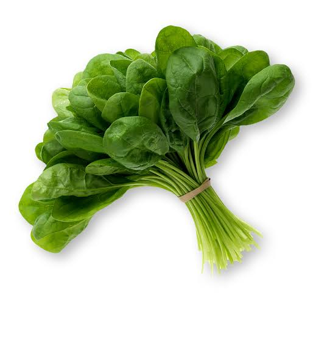

Spinach

Nutritional Benefits
- Spinach is packed with nutrients, including vitamins A, C, and K, as well as folate, iron, and calcium. It's low in calories but high in fiber, making it a nutrient-dense addition to your diet.
Spinach is a leafy green vegetable packed with nutrients like iron, calcium, and vitamins A and C. It can be eaten raw in salads or cooked in various dishes.
Health Benifit
- Regular consumption of spinach is associated with various health benefits, such as improved eye health, strengthened bones, and reduced risk of chronic diseases like heart disease and certain cancers. The antioxidants in spinach help fight inflammation and oxidative stress in the body.